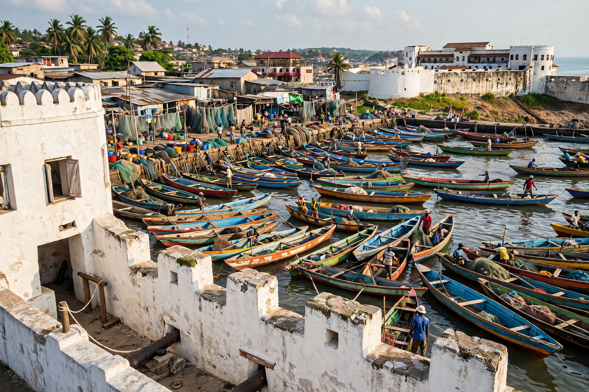

From Wikipedia, the free encyclopedia

| Elmina | |
|---|---|
| Country | Ghana |
| Region | Central Region |
| Landmark | Elmina Castle (São Jorge da Mina), founded 1482 |
| Economy | Fishing, salt production, tourism |
Elmina is a town in the Central Region of Ghana, on the Gulf of Guinea coast west of Cape Coast. It grew around Elmina Castle, founded by the Portuguese in 1482 as São Jorge da Mina — the first European trading post on the Gulf of Guinea and the oldest European building in existence south of the Sahara.
The Portuguese built the castle to trade for gold from the Akan interior — "a mina" means "the mine" — and Elmina became the hub of Portugal's Gold Coast commerce. As the Atlantic slave trade expanded, the castle's role shifted: enslaved Africans were held in its dungeons before being shipped through the notorious "door of no return" to the Americas. The Dutch West India Company captured Elmina in 1637 after earlier failed attempts, and the town remained the capital of the Dutch Gold Coast until 1872, when the Dutch possessions were sold to Britain. Under the British the town's importance waned in favour of Accra and Cape Coast, though its lagoon-side fishing economy continued.
Modern Elmina is a fishing town centred on one of Ghana's busiest canoe harbours, with salt production from coastal lagoons and growing heritage tourism. Elmina Castle, together with nearby Fort Coenraadsburg (St. Jago), is a UNESCO World Heritage Site and a major site of pilgrimage for members of the African diaspora. The town's Edina Bakatue festival marks the opening of the fishing season.